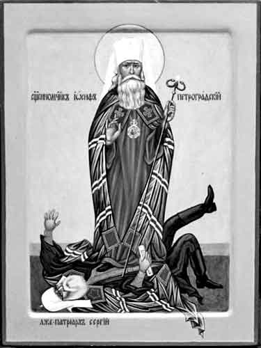

În istoria Bisericii lui Hristos au existat mai multe momente critice, în care conducătorii oficiali ai unei Biserici locale au căzut din dreapta credință, și pentru o anumită perioadă credincioșii au ezitat, neștiind pe cine să urmeze, sau neștiind unde este de găsit Însăși Biserica. În astfel de momente, Hristos Domnul, credincios făgăduinței că „porțile iadului nu vor birui” (Matei, 16,18) Biserica Lui, ridică un atlet care să spună adevărul și să-i atragă pe credincioși de partea Ortodoxiei. La începutul perioadei moderne un astfel de atlet este Sf. Marcu al Efesului, care singur dintre ierarhii Bisericii Greciei, a condamnat fără reținere necuviosul Sinod și pseudo-unirea de la Florența și i-a trezit pe credincioșii ortodocși, făcându-i să realizeze că Biserica Romei căzuse în erezie, iar cei care s-au unit cu ei se poziționau prin aceasta în afara Bisericii lui Hristos.
În secolul nostru, când a apărut un dușman al Bisericii și mai de temut sub forma totalitarismului pseudo-religios al comunismului ateist, și când conducătorul Bisericii Ruse, Mitropolitul Serghie, a proclamat prin Declarația sa din 1927 „principiul cooperării practice și ideologice cu forțele anti-creștinismului” — atunci Dumnezeu a ridicat, în fruntea unei adevărate armate de mărturisitori, un atlet în persoana Mitropolitului Iosif ca să se opună și să acuze această „legalizare” distrugătoare de suflet și să conducă mișcarea celor credincioși Bisericii Ortodoxe Ruse în catacombe.

Viața mitropolitului Iosif (Petrovykh) de dinainte de Revoluție ne este în mare măsură necunoscută, deși trăsăturile ei generale pot fi descoperite în scrierile sale, care au început să apară în presa religioasă rusească pe la sfârșitul secolului. Astfel, știm că s-a născut aproximativ între 1870 și 1875, în provincia Novgorod în teritoriul Tikhvin, cunoscut pentru icoana făcătoare de minuni a Maicii Domnului, față de care viitorul ierarh avea o mare evlavie. În 1899 a fost într-un pelerinaj la Locurile Sfinte, și poate că aici scânteia credinței sale ortodoxe a fost aprinsă în flacăra unei dorințe arzătoare de a sluji Bisericii lui Hristos.
După ce a petrecut întreaga noapte a zilei de 18 iunie în Biserica Sfântului Mormânt, a ieșit la ivirea zorilor, și mergând pe străzile pustii ale Ierusalimului, a fost cuprins de cele mai nobile simțăminte: „Era atât de bine, așa cum este numai de Paști, când te întorci acasă de la slujbă, arzând de dorința de a îmbrățișa întreaga lume, de a renunța la pământ și de a zbura undeva departe, foarte departe, în adâncul cerului de necuprins!…” Toată viața avea să rămână credincios acestui entuziasm inspirat de Hristos din tinerețea lui. Peste ani, maturizat de nevoințele ascetice și de suferință, acest entuziasm l-a făcut să devină un mărturisitor și un martir pentru Hristos și pentru Biserica Sa cea Sfântă.
Scrierile mitropolitului Iosif despre diferite aspecte ale vieții spirituale descoperă o profundă înrădăcinare în literatura patristică și ascetică ortodoxă și inspirarea sa din textele cărților de slujbă ale Bisericii. În 1901, când era ieromonah, a scris un articol cuprinzător și precis asupra întrebării: „Dacă poate un creștin ortodox și cum anume să se roage pentru creștinii neortodocși?”. La începutul lui 1905, fiind acum arhimandrit, a publicat lucrarea sa cea mai importantă, o carte întreagă compusă din scurte cugetări spirituale cu titlul „Sub îmbrățișarea Tatălui: Din jurnalul unui monah”. Următoarele fragmente din lucrarea sa vor crea o imagine despre sensibilitatea autorului și vor oferi o perspectivă exactă asupra chestiunilor spirituale.
„Necazurile mari, precum aurul în cuptor, curăță sufletul, îi dau viață, îl fortifică și îl domolesc. Omul devine mai puțin sensibil față de necazurile zilnice și față de suferințele de aici, devine mai calm, mai echilibrat, privește lumea mai serios și mai sobru, devine mai puțin atașat față de cele pământești, însetează mai mult după cele cerești, veșnice și fără sfârșit.”
„Omul are multă energie pentru activitate; doar că aceasta trebuie să fie trezită. Este trezită prin nevoi, necazuri, prin lupta pentru existență, prin dragostea față de Dumnezeu, prin setea de mântuire, prin conștiința instabilității vieții prezente și a dulceții vieții viitoare și prin toate celelalte pe care le învață Biserica prin mijloacele pe care le posedă pentru îndrumarea și iluminarea fiecărui om care îi este dat…”
„Cu cât ne încredem mai mult în ajutorul care vine de la oameni și în apărarea altora, cu atât sunt mai departe de noi harul milostiv și ajutorul lui Dumnezeu. Și acest lucru este firesc: deoarece până la urmă, dacă am primi ajutor de la Dumnezeu atunci când ne așteptăm să-l primim de la om, i-am atribui omului ceea ce este al lui Dumnezeu, și am schimba slava lui Dumnezeu cu slava omenească. Prin urmare Dumnezeu așează lucrurile astfel încât ajutorul Său devine tot mai evident pentru noi în măsura în care starea noastră de neajutorare devine mai sigură și mai evidentă și toată nădejdea noastră rămâne la El!”
La scurt timp după 1908, arhimandritul Iosif a fost hirotonit episcop de Uglich. Cuvântul rostit cu această ocazie, citat mai jost în întregime, este în mod evident profetic. Pătruns de conștiința mișcării crescânde de anarhie și necredință care dizolva deja structura cea mai intimă a civilizației ortodoxe ruse și care era pe punctul de a da naștere hidoasei Revoluții, cuvintele tânărului ierarh sună aproape ca un manifest al sufletului Rusiei sfinte care se confruntă chiar și astăzi cu armatele unite ale satanismului mondial.
În acest moment unic, extrem de important și cel mai sfânt din viața mea, când chemarea Domnului nostru — Urmează Mie — a atins chiar și marea mea nevrednicie — bucuria și frica, binecuvântarea și suferința îmbrățișează umilul meu suflet.
Înaintea privirii minții mele stau corurile sfinților Apostoli, demnitățile marilor ierarhi — cei care au semănat credința și au întemeiat Biserica lui Hristos pe pământ… De la cei simpli la cei foarte educați, de la cei infirmi la cei puternici și bogați în puterea sufletului — ei au oferit și și-au pus viața și toată puterea lor pe altarul iubirii lui Hristos, s-au dat pe sine ca materie acelui Foc sfânt al lui Hristos, prin care întregul univers strălucește în har.
Și eu să ating acest Foc dătător de har; și eu să îmi ofer slabele mele puteri — sau mai degrabă infirmități — pe altarul Bisericii Universale; și eu să îmi pun viața în cuptorul Flăcării lui Hristos, să aud chemarea lui Hristos de a sluji o atât de mare lucrare a lui Dumnezeu și să primesc posibilitatea de a răspunde acestei chemări prin slujirea care este cea mai înaltă expresie apostolică de iubire și devoțiune față de Cel mai dulce și dumnezeiesc Ierarh — O, câte motive de bucurie! Cât este de îndeajuns aceasta pentru a umple pe cineva cu un simțământ de sinceră și negrăită mângâiere și cu un sentiment gingaș!…
Cu toate acestea — sursa unei astfel de bucurii și mângâieri reprezintă în același timp pentru mine și o sursă de teamă silnică, de neliniști, de suferințe și necazuri. Frumusețea izbânzilor apostolilor, frumusețea celei mai înălțătoare expresii a iubirii și devoțiunii față de Mântuitorul, al celei mai înalte slujiri adusă Bisericii lui Dumnezeu pe pământ — apar înaintea privirii mele nu ca simple CUVINTE, ci ca fapte adevărate, ca cea mai vie REALITATE, dincolo de înfrumusețările gândului și ale cuvântului.
Și ce nevoințe, ce asceză, ce suferință nu ne-au fost date de această realitate ca exemplu și ca întărire! Priviți rănile sângerânde ale captivilor absoluți ai iubirii lui Hristos — rănile sunt ridicate printr-o umilă rugăciune pe buze pentru călăii lor și cu o strălucire nepământească pe fețele lor! Priviți toate ororile persecuției, tulburările, torturile — toate felurile de chinuri ale morții prin care iadul a încercat să îi împiedice pe trimișii Celui Răstignit, adâncindu-și prin aceasta propria înfrângere și dizgrație.
Având în minte toate acestea — lucruri care nu sunt mari și minunate din punct de vedere omenesc, și prin care Biserica lui Hristos, mare și puternică până acum, a fost întemeiată — fără să vreau mă întreb: Poate fi posibil ca până și eu să fiu capabil de a îndura toate acestea? Poate fi posibil ca până și eu să am destulă temeinicie, destul curaj, ca să stau în aceeași demnitate cu astfel de exemple ale puterii lui Dumnezeu și ale tuturor celor care sunt făcute prin puterea iubirii lui Dumnezeu față de om și prin iubirea omului față de Dumnezeu?…
Totuși — teama și tremurul meu încep să crească la gândul că, în timp ce tăria și zelul conducătorilor Bisericii lui Hristos de astăzi sunt departe de a rivaliza pe cele ale Apostolilor, ei trebuie să se lupte cu dușmani considerabil mai puternici și trebuie să întâmpine obstacole și dificultăți mult mai mari în această slujire. Sfinții Apostoli, până la urmă, au avut de a face cu o luptă ferventă — deși direcționată în mod greșit — pentru adevăr, în timp ce noi, în vremurile noastre, trebuie să avem de a face cu o îndărătnică RESPINGERE A ADEVĂRULUI și chiar și a ideii unui Dumnezeu viu și a importanței Sale vitale pentru inima omului. Cu toate părțile lor negative, cu toate insuficiențele și erorile, păgânismul și iudaismul antichității erau totuși o căutare sinceră a lui Dumnezeu, o dorință sinceră de a-I sluji Lui, o exemplificare vie și activă a setei de comuniune cu El. Dar necredința de astăzi, toate formele posibile de eroare și agitație — cei învățați și cei analfabeți, anti-religioși și anti-morali — și întreaga viață publică de astăzi: nu exprimă ele în om o profundă rea-voință de a nu-L cunoaște pe Dumnezeu, o rea-voință de a nu admite nici măcar existența Lui, iar pe de altă parte dorința de a se debarasa complet de El, de a se descurca fără El, de a trăi numai din cuceririle minții umane trufașe și din cele ale culturii?
În astfel de vremuri dureroase, acceptarea cu supunere a noii slujiri a Bisericii lui Hristos a adus asupra mea voința lui Dumnezeu, cu toată smerenia vă implor, preaînțelepți păstori, să aduceți asupra mea prin rugăciunile voastre arhierești puterea de la Dumnezeu ca să mă conducă în mod cuviincios în această mare slujire. Fie ca atotputernicul har al Duhului lui Dumnezeu să coboare peste creștetul celui ascultător chemării lui Dumnezeu și să facă în mine, care sunt nevrednic, voia și puterea Sa. Amin.
***
Odată cu venirea revoluției, forțele necredinței, a căror putere ierarhul o știa foarte bine, s-au dezlănțuit cu toată furia asupra pământului rusesc și în special asupra Bisericii Ortodoxe, a cărei simplă existență era o amenințare pentru programul bolșevic și un reproș făcut conștiinței care mai rămânea în agitații atei. Cât timp patriarhul Tihon a rămas în viață, Biserica a avut un centru vizibil de unitate. Chiar și atunci când patriarhul a fost închis, când apostații „Bisericii vii” au luat în stăpânire majoritatea bisericilor ortodoxe din Rusia, și Biserica „progresivă” a Constantinopolului dăduse un prestigiu internațional acestei sinagoge a lui satan, recunoscând-o ca Biserica Ortodoxă a Rusiei — cei credincioși, prin faptul că au rămas credincioși patriarhului, au rămas ortodocși, și credincioșia lor față de patriarh a devenit testul de verificare a ortodoxiei lor; și acest fapt mai mult decât orice altceva a diminuat puterea „Bisericii vii”.
***
Dar odată cu moartea patriarhului Tihon în 1925, situația a devenit mult mai neclară. În condiții de persecuție era imposibilă adunarea unui sinod pentru alegerea unui nou patriarh; prevăzând acest lucru, patriarhul Tihon a desemnat trei ierarhi, unul dintre aceștia (oricare din ei nu s-ar fi aflat în închisoare sau sub interdicție) trebuind să devină Locum Tenens al tronului patriarhal la moartea lui și să mențină unitatea externă a Bisericii. Dintre acești trei ierarhi, doar unul (Mitropolitul Petru de Krutitsk) — era liber în momentul morții patriarhului, și a fost acceptat, printr-un act special, semnat de mai mult de cinzeci de episcopi, în calitate de conducător al Bisericii ruse. Mitropolitul Petru a desemnat la rândul său trei „substituți” pentru poziția de Locum Tenens în caz că ar fi fost arestat sau omorât la rândul său, unul dintre aceștia era Mitropolitul Iosif (în acea perioadă Arhiepiscop de Rostov), iar un altul era Mitropolitul Serghie (mai târziu „patriarh”). Mitropolitul Petru a fost arestat peste cinci luni pentru refuzul de a fi semnat „declarația” care ar fi dat pe mâna regimului ateist libertatea internă a Bisericii. Din 1925 până în 1927 niciun candidat nu a fost capabil să-i ia locul pentru mai mult de câteva luni înainte de a fi închis, și a devenit un fapt evident că guvernul sovietic nu se va liniști până când nu va fi găsit sau nu va fi forțat un ierarh să semneze un document pe placul regimului. Acest ierarh a fost găsit în persoana mitropolitului Serghie, care în 16/29 iulie 1927, după ce a fost eliberat în urma mai multor luni de închisoare, a făcut publică infama „Declarație” care l-a făcut pe el și pe urmașii lui agenții în fapt ai Statului sovietic. Publicând declarația în 19 august, ziarul oficial sovietic Izvestia a specificat că „partea vizionară a clerului se afla deja pe acest drum încă din 1922” — referindu-se la „Biserica vie”. Astfel a reușit regimul ateist să introducă „Înnoirea” chiar în Biserica Patriarhală, iar rezultatul a fost protestul decisiv al ierarhilor Bisericii Ruse, care, când au văzut că mitropolitul Serghie era în mod clar hotărât să-și impună voința sa în întreaga Biserică, curând au început să întrerupă comuniunea cu el.
Astfel a devenit imediat clar că „Declarația” se afla în contrazicere flagrantă cu al 34-lea Canon Apostolic, fiind proclamată „fără consimțământul tuturor” episcopilor, fiind doar lucrarea lui Serghie dictată de regimul ateist; și prin urmare singura posibilitate pentru Serghie era aceea de a retracta „Declarația” în fața unei astfel de copleșitoare dezaprobări a confraților săi ierarhi. Cu toate acestea, în loc să facă astfel, ca și când ar fi vrut să dovedească faptul că nu mai considera necesară opinia Bisericii, ci că devenise unealta supusă a regimului, el a început, împreună cu „Sinodul” său necanonic — a cărui formare depășea cu mult atribuțiile sale de substitut al Locotenentului — un transfer nemaiîntâlnit de episcopi dintr-un scaun episcopal în altul și i-a suspendat pe cei care nu erau de acord cu el, fondând astfel docila Biserică „Sovietică”.
Mitropolitul Iosif, ca unul dintre primii care au protestat împotriva „Declarației”, a fost imediat „transferat” din Petrograd, eparhie în care nu avea să revină decât în septembrie 1926. Printr-un act al „Sinodului” din 19 octombrie 1927, „Mitropolitul Iosif este considerat transferat în Eparhia Odessa, și i se sugerează să nu fie tentat de facila posibilitate de a locui în Rostov, lucru care ar cauza tulburare atât printre credincioșii din Leningrad cât și printre cei din Rostov…” Ca răspuns, Mitropolitul Iosif a citat acele canoane care interzic transferul inutil al episcopilor din oraș în oraș și a afirmat, citând canoanele: „Chiar dacă am permis să mi se facă un astfel de lucru contrar Sinodului Sfinților Părinți, acest ordin tot mai poate fi considerat „a fi complet invalid”, iar cel care a fost îndepărtat poate „să revină” la propria sa Biserică”. Lăsând cazul său pe seama „judecății lui Dumnezeu”, el a refuzat să se mute.
***
În acel moment, în toamna lui 1927, Mitropolitul Iosif încă mai considera cazul său ca unul personal, și, așa cum afirmă într-unul din „Documentele” care urmează, era pregătit să se retragă cu rușine și sub interdicție pentru a nu fi în comuniune cu Serghie, dar încă nu avea nici o intenție de a se implica într-o „schismă”.
Cu toate acestea, curând a devenit clar că situația lui nu era decât o mică parte dintr-o chestiune care convulsionase întreaga Rusie Ortodoxă. Episcopii care se mai aflau încă în libertate și erau capabili să judece această chestiune au ajuns la concluzia că Serghie însuși devenise schismatic prin „Declarația” sa și prin actele sale arbitrare îndreptate împotriva Bisericii și s-au grăbit să-și declare separarea de el, la sfârșitul lui 1927 și începutul lui 1928. În toată această perioadă Mitropolitului Iosif nu i se permitea de către autorități să-și ocupe scaunul episcopal de la Petrograd (Leningrad), dar deja în decembrie 1927 își dăduse binecuvântarea episcopilor săi vicari să se îndepărteze de Serghie; și fiind el însuși în Rostov, a semnat, împreună cu Mitropolitul Agatanghel și cu alți ierarhi din regiunea Yaroslavl, o epistolă adresată Mitropolitului Serghie în 6 februarie 1928, în care era declarată separarea lor de el până când acesta nu va fi arătat pocăință pentru greșelile sale, recunoscând în același timp în calitate de cap al Bisericii pe Mitropolitul Petru care fusese exilat.
În această perioadă, Petrogradul devenise centrul protestului Bisericii împotriva lui Serghie, și se putea găsi cu greu un suflet ortodox în fosta capitală, care să nu fi fost neliniștit de întrebarea pe cine să urmeze. Mulți au refuzat pentru o vreme să primească Euharistia în vreo biserică, nefiind siguri ale cui Taine sunt valide sau unde se găsea Biserica lui Hristos. După semnarea epistolei Arhiepiscopilor din Yaroslavl, Mitropolitul Iosif a pășit curajos în lupta pentru Biserică și a dat binecuvântare clerului și credincioșilor din Petrograd să-i urmeze exemplul în a se separa de Serghie, oferindu-și îndrumarea spirituală și purtarea de grijă față de această mișcare și încredințând conducerea Diocezei din Petrograd vicarului său, sincer oponent al lui Serghie, episcopul Dimitrie al Gdovului. Binecuvântând „buna hotărâre a zeloșilor pentru adevărul lui Hristos”, el s-a rugat „ca Domnul să ne păzească pe toți în unire și sfântă statornicie a duhului în noua încercare la care este supusă Biserica”.
Dar împotriva armelor duhovnicești ale ostașilor lui Hristos, cel rău adunase toate forțele primului regim satanist al lumii. Interdicțiile impuse de Mitropolitul Serghie erau semnul pentru Poliția politică sovietică de a purcede la arestarea și exilarea episcopilor protestatari; chiar și mulți dintre cei care frecventau bisericile „legale” ale lui Serghie nu au fost cruțați de către autorități, iar rezultatul cel mai important al politicii „serghianismului” — pentru a cita cuvintele, născute dintr-o experiență amară, folosite patruzeci de ani mai târziu în interiorul URSS-ului de către Boris Talantov — era acela că „acțiunile mitropolitului Serghie nu-i salvau decât propria lui piele”. O noapte întunecată de suferință ispășitoare s-a așternut peste pământul rusesc și peste credincioși. „Serghianismul” a fost respins de credincioși deoarece — în cuvintele lui Talantov, încă o dată — „pe la începutul celui de al doilea război mondial… cea mai mare parte dintre acele biserici care rămăseseră nu îl recunoșteau pe mitropolitul Serghie.” Din cei 100 de episcopi cunoscuți ca fiind rămași în viață în 1943, Serghie nu a putut să găsească decât 18 (și unii dintre aceștia erau de curând hirotoniți) care să-l aleagă „patriarh” în acel an.
Mitropolitul Iosif, prin cuvintele și faptele sale hotărâte și prin poziția sa între unul dintre substituții Locotenentului tronului patriarhal, a devenit în fapt conducătorul mișcării separatiste, acționând în numele locotenentului exilat, Mitropolitul Petru, a cărui atitudine potrivnică serghianismului nu va fi cunoscută pentru o perioadă. Atât de puternice erau influența și exemplul mitropolitului Iosif, încât toți cei care l-au urmat au fost numiți „iozefiți”, și până astăzi toți cei care apără patriarhatul lui Serghie numesc această mișcare a celor zeloși pentru Ortodoxie „schisma iozefină”.
Au fost „serghianiști” atunci, așa cum sunt și astăzi, care, chiar în timp ce admit că cele mai bune elemente din cler și dintre credincioși au trecut de partea „iozefinilor”, îi acuză și îi condamnă pentru „mândria” lor de a crede că ei reprezintă adevărata Biserică Ortodoxă a Rusiei. Afirmațiile mitropolitului Iosif, este adevărat, sunt deosebit de sincere, absolut necompromițătoare în vreun fel, și necruțătoare față de toți. Dar cei care găsesc „mândrie” în astfel de cuvinte sunt poate pur și simplu inconștienți de urgența critică a chestiunii în discuție. Când Biserica este trădată și credincioșii sunt conduși în direcții greșite, nu mai este timp pentru complimente și „dialoguri” politicoase, și nici pentru a pune „înțelegerea compătimitoare” mai presus de adevăr. Pentru sufletele curajoase cunoașterea faptului că fiecare cuvânt poate aduce închisoarea și moartea nu face decât să le mărească îndrăzneala pentru a vorbi adevărul fără cosmetizări. Și astfel a fost întotdeauna în Biserica lui Hristos; neînfricații Ei apărători sunt cântați ca atleți în imnele de venerare ale Bisericii. În mod deosebit, polemica dreaptă a mitropolitului Iosif și a celor care îl urmau a reapărut în Uniunea Sovietică în scrierile lui Boris Talantov și a altor critici sinceri ai ierarhiei serghianiste. În comparație cu acestea, criticile serghianismului din diaspora rusească sunt destul de blânde și înțelegătoare.
„Nu vă temeți de cei ce ucid trupul, iar sufletul nu pot să-l ucidă; temeți-vă mai curând de acela care poate și sufletul și trupul să le piardă în gheenă.”